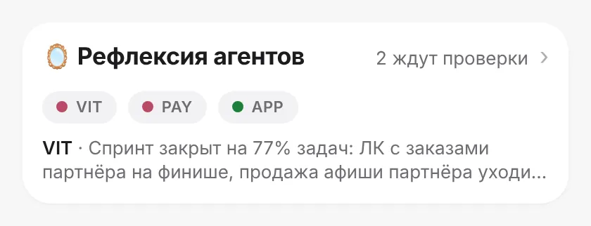
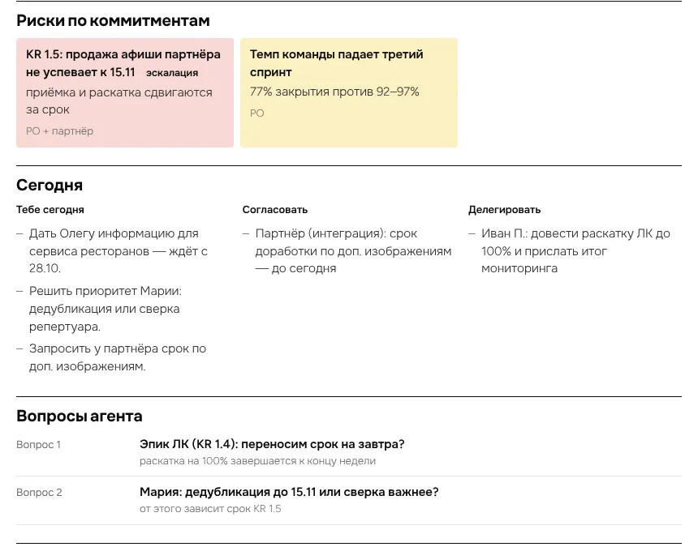
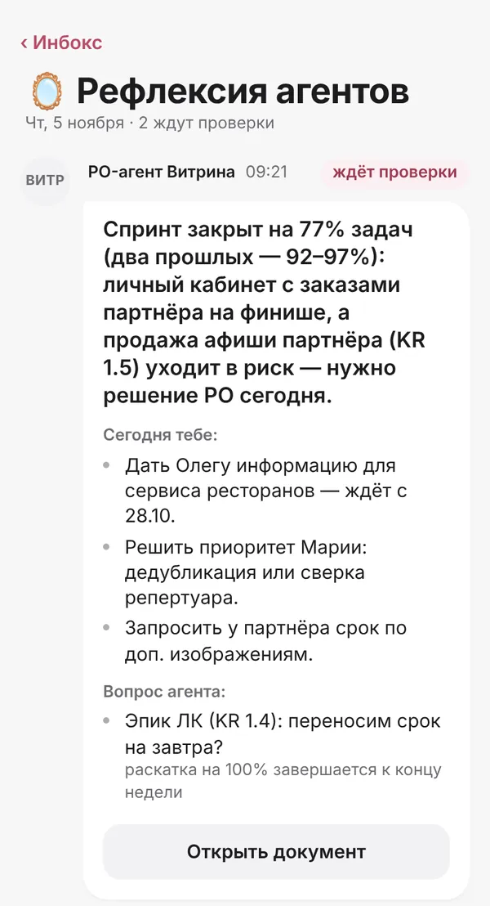
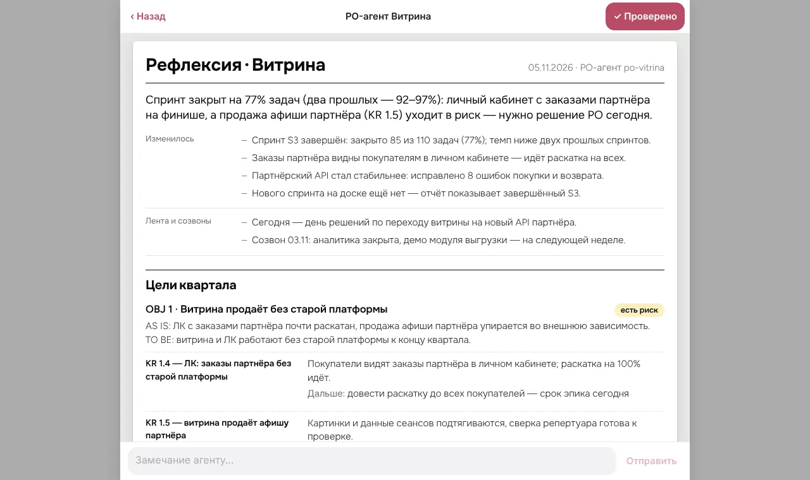

PO-АГЕНТЫ · РИТУАЛ ВЫРАВНИВАНИЯ КОНТЕКСТА
Саморефлексия
ИИ-агентов
Каждое утро PO-агенты сверяют своё знание о команде с отчётами и лентой, сдают руководителю документ рефлексии и учатся на его замечаниях.
Агент знает о команде то же, что и я.
Не больше и не меньше.
Проблема
Агент отвечает по устаревшей картине
Отчёты по спринту, блокерам и бизнесу обновляются каждое утро. Агент о них не знает: он отвечает из своей памяти, а она устаревает быстрее доски в Jira.
Почему так происходит
Отчёты — для людей, агенту их никто не показывает
Отчёты — экраны для глаз
Блокаторы, спринт, бизнес-колода собираются для человека. Агент до них не дотягивается.
Память агента полна
Постоянная память — около 2 200 знаков, и она занята правилами. Статусам задач там места нет.
Правки руководителя теряются
Раз в две недели я выравниваю бизнес-отчёт на слайдах, а правки оставались только в браузере.
Нет обратной связи
Агент не узнаёт, где ошибся, — и завтра ошибётся так же.
Идея
Отчёт — это выравнивание контекста людей и агентов
Данные утра
Снимок Jira, блокаторы, бизнес-колода, выпуск ленты и рефлексии созвонов.
Агент сверяет
Выверяет отчёты между собой, пишет OBJ, KR и итоги своей команды в колоду, сдаёт рефлексию.
Руководитель правит
Читает три документа и пишет замечания. Раз в две недели правит бизнес-колоду.
Агент запоминает
Правки и замечания — достоверный источник. Агент выносит урок и учитывает его завтра.
Для агента отчёты — поставщик контекста для общения в любом чате: о рисках, о долгосрочных целях, об эскалациях.
Как выглядит утро
Последний шаг ритуала — сверить картину с агентами
- Лента новостейутренний выпуск по всем чатам
- Отчёт по блокаторамкто кого ждёт и сколько
- Отчёт по спринтууспеваем ли, что держит команду
- Календарь и обещаниячто согласовать и с кем
- Рефлексия агентовтри документа ждут проверки

Карточка в Инбоксе на «Сегодня»
К пятому шагу у меня уже есть картина дня. Рефлексии показывают, совпадает ли с ней картина агентов, и где нет.
Что агент получает на вход
Тот же контекст, что у меня утром
Спринт и блокаторы
Прогресс эпиков, темп за три спринта, задачи в ожидании и без движения.
Цели и правки PO
OBJ и KR из карты целей, итоги направлений и все правки руководителя.
Выпуск и созвоны
Утренний выпуск ленты и рефлексии созвонов за три дня: договорённости и решения.
Свой вчерашний день
Прошлая рефлексия, вопросы без ответа, замечания руководителя и уроки.
Контекст собирает детерминированный скрипт, частями по 28 КБ. Модель не ходит в Jira сама и не берёт цифры из головы: только то, что в данных.
Что агент сдаёт
Документ рефлексии — по пунктам моего утра
- Главное за сутки одной фразой и что изменилось
- Цели квартала: OBJ → KR, состояние и следующий шаг
- Чем занят каждый в команде
- Риски по моим коммитментам и эскалации
- Сегодня тебе · согласовать · делегировать
- Вопросы агента — не больше трёх
- Статусы задач, которые агент запомнил

Проверка
Три документа — в одном чате

Телефон

Документ: «Проверено» и поле замечания
Открыл, прочитал, написал замечание, нажал «Проверено» — счётчик в Инбоксе уменьшился. Документ приходит и в чат агентов в мессенджере.
Обратная связь
Замечание становится уроком агента
Замечание доходит до агента сразу, даже если его модель сейчас недоступна: оно уже лежит в его знании. Ответ «учёл» придёт в ближайший проход.
Достоверный источник
Мои правки в колоде — факт для агента
Правка — слоем на сервер
Текст, поправленный на слайде бизнес-колоды, сохраняется версией с автором «PO», а не в браузере.
Агент не переписывает
Поля, которые правил руководитель, агент оставляет как есть и перечисляет в «Принято от PO».
Слои вместо перезаписи
Каждая запись — версия: агенты и человек не затирают правки друг друга, видно, кто и когда менял.
OBJ и KR агент берёт только из карты целей. Эпика нет в карте — агент не выдумывает привязку, а спрашивает руководителя.
Знание агента
В любом чате агент отвечает по той же картине
- Навык «пульс команды» обновляется каждое утро: цели, статусы задач, риски, что сегодня у руководителя
- Туда же копятся уроки из замечаний
- В постоянной памяти — одна строка: «читай пульс перед ответом о команде»
Кто думает
Механика — скрипт, смысл — сменный исполнитель
Кто успел первым, тот и сделал: CLI отдаёт только несделанное. Так ритуал работает и в неделю, когда у агентов нет модели.
Первые прогоны
Каждое утро — по документу на команду, к началу рабочего дня. Расхождения видно за минуту.
Честно о слабых местах
Что пока не идеально
Ответ не мгновенный
Замечание сразу попадает в знание агента, а ответ «учёл» приходит в ближайший проход.
Данные — снимок утра
Если утренний сбор упал, рефлексия строится на вчерашних данных — и пишет об этом в источниках.
Качество — от карты целей
Нет эпика в карте целей — агент спросит. Пока руководитель не ответил, колода показывает «без привязки».
Документ — не истина
Это картина агента. Её ценность — в расхождениях с моей, а не в том, чтобы ей верить.
Каждое утро —
одна картина на всех
Отчёты перестают быть только экранами: они кормят контекстом и людей, и агентов. Руководитель тратит пять минут, агенты — не расходятся с ним весь день.
github.com/po-helper-org/poh-widget-call-reflection 🔒